We compared the new, open-source LearnLib to the automata learning library LibAlf, developed at RWTH Aachen, Germany, and written in C++. We considered the following learning algorithms, which are available in both libraries. We only consider the DFA versions of all learning algorithms.
- L*: Angluin’s L* algorithm, adding all prefixes of a counterexample to the table
- L*Col: A variant of L*, adding all suffixes of a counterexample to the table
- RS: Rivest/Schapire’s algorithm, a variant of L* adding a single suffix of a counterexample, found using binary search, to the table
- KV: Kearns/Vazirani’s algorithm, using linear search for counterexample analysis
- KVB: Kearns/Vazirani’s algorithm, using binary search for counterexample analysis
Experimental Setup
All experiments were run on an Apple MacBook Pro with a Quad-Core Intel i7 2.5 GHz CPU (x86_64) and 16 GB of RAM, running OS X, version 10.9.5, and Oracle Java 8, version 1.8.0_25-b17.
A version 0.3) was used that has been adjusted to compile on Windows (using MinGW) and Mac OS X (using clang). This LibAlf was compiled using Apple LLVM version 6.0 (clang-600.0.57) and with flags -fpic -O3. LibAlf was interfaced with from Java by using the JNI-based bridge.
Counterexample generation
Counterexamples were generated by comparing the hypothesis to the (known) target system, using the method Automata.findSeparatingWord.
Caching
LibAlf is designed in such a fashion that every learning algorithm poses membership queries not directly, but indirectly reads them from a structure called knowledgebase. This knowledgebase in effect serves as a cache, and is internally organized as a tree. Since maintaining a cache introduces some overhead, we also run the LearnLib algorithms with LearnLib’s (tree) cache, created using DFACaches.createTreeCache, to allow for a fair comparison.
Measurements
For all experiments, only the time spent directly in the learning algorithm was taken into account (excluding, e.g., time needed for counterexample generation).
Performance as a Function of State Count
For these experiments, DFA were randomly generated with three different alphabet sizes (2, 10, 100) and approximate state counts between 10 and 1000 (10 and 400 for alphabet size 100), using AutomataLib’s random DFA generator. The running time of a single learning process for each algorithm was then recorded for the actual state count of the minimized target automaton. The blue lines represent the running times of LearnLib, while the red lines represent the running times of LibAlf.
Small alphabet (k = 2)
| 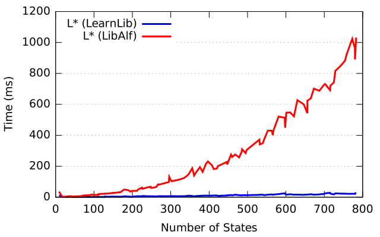 | 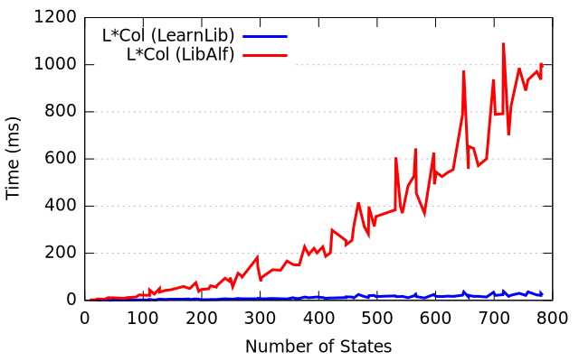 | 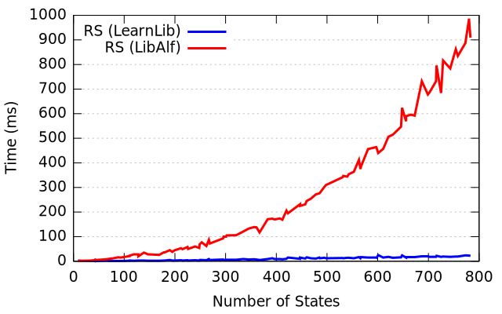 | 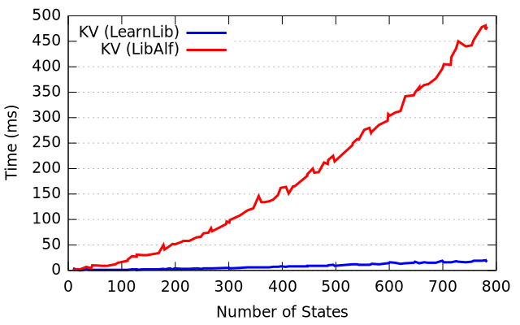 |

|
| L* | L*Col | RS | KV | KVB |
{kind=link}
{kind=link}
{kind=link}
{kind=link}
Medium alphabet (k = 10)

|
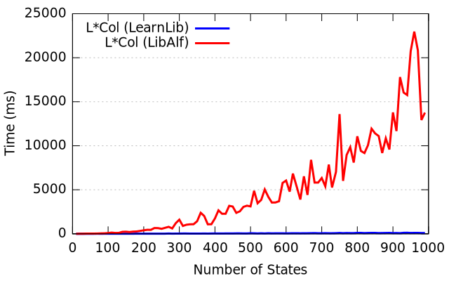 | 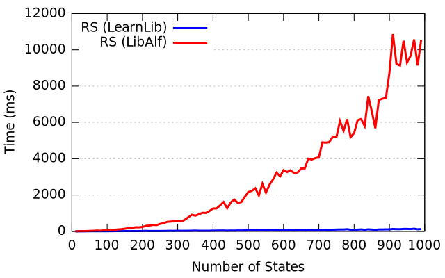 | 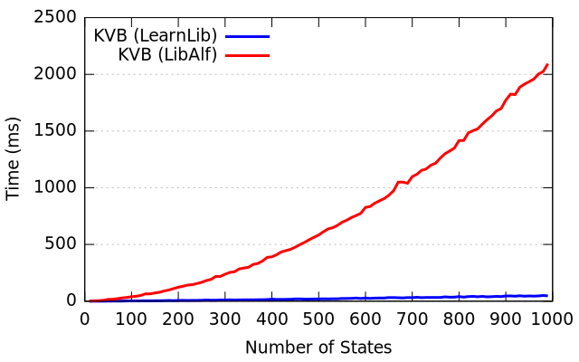 | |
| L* | L*Col | RS | KV | KVB |
{kind=link}
{kind=link}
{kind=link}
{kind=link}
Large alphabet (k = 100)
| 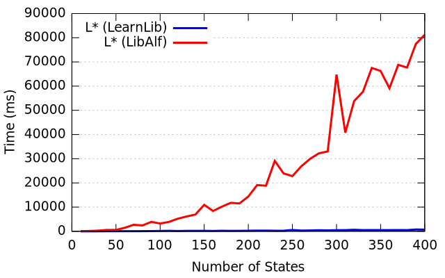 | 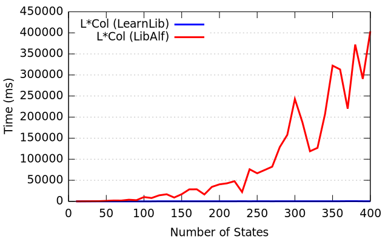 | 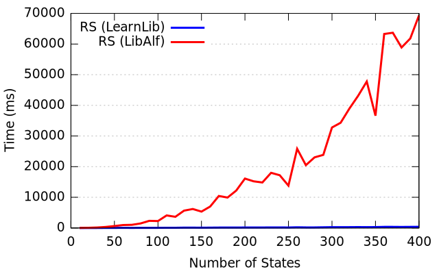 | 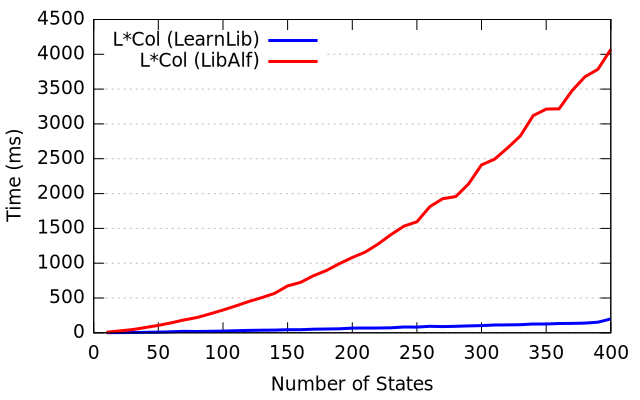 | |
| L* | L*Col | RS | KV | KVB |
{kind=link}
{kind=link}
{kind=link}
{kind=link}
{kind=link}